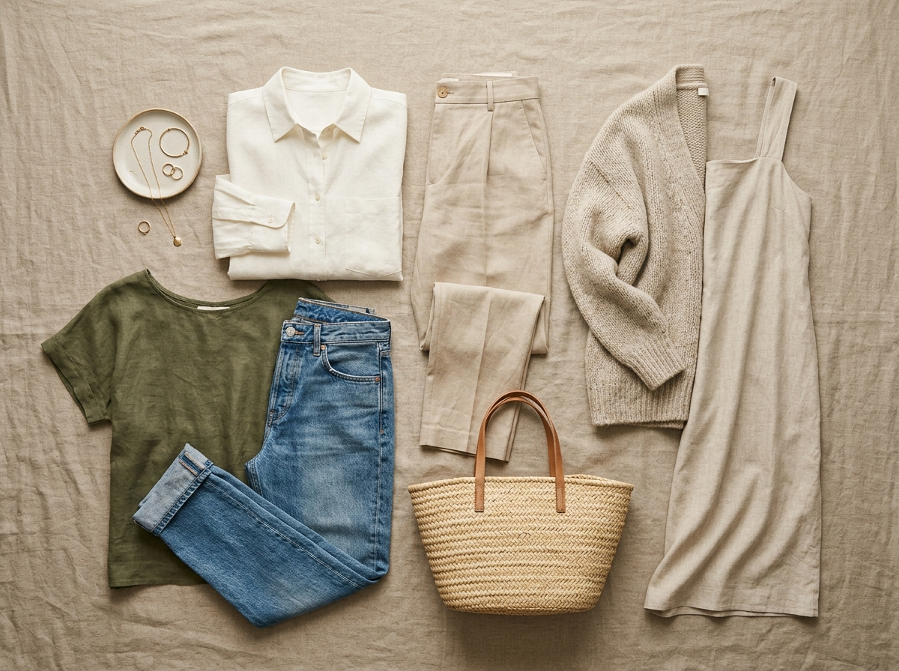
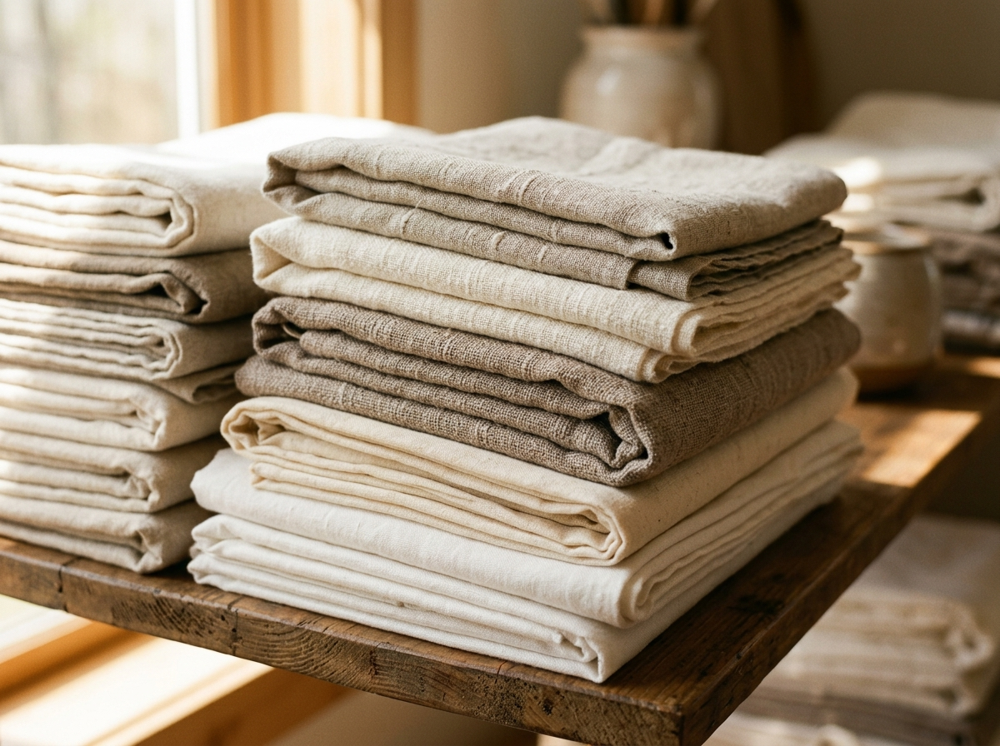
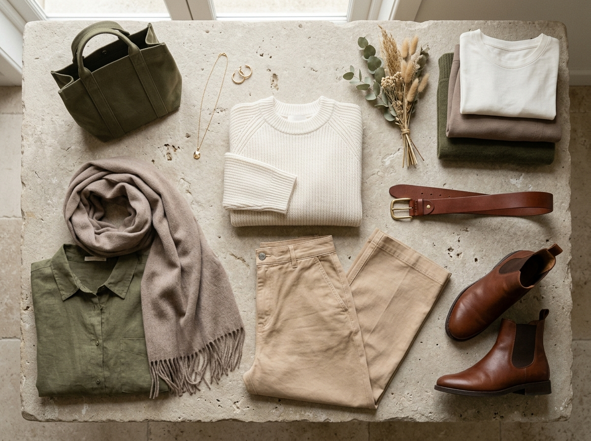
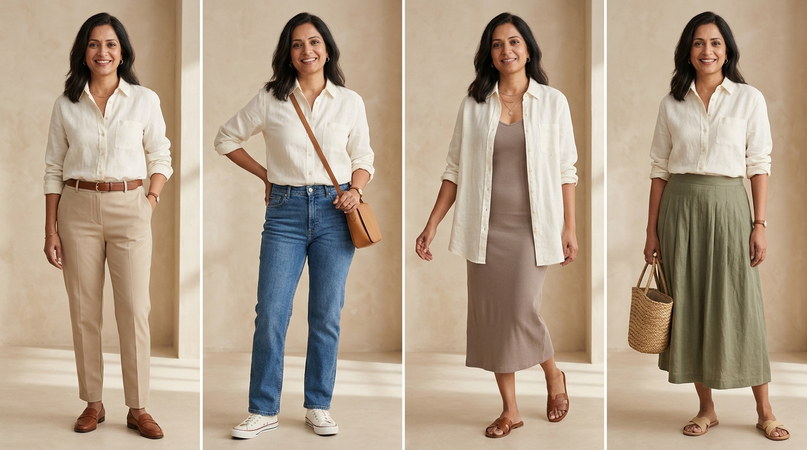
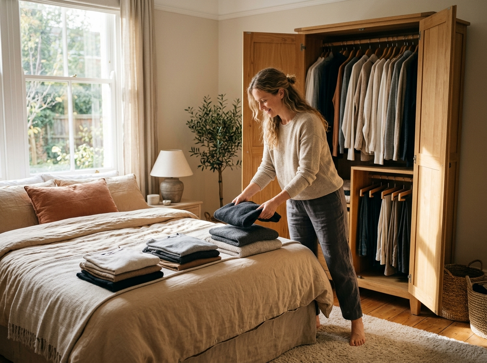
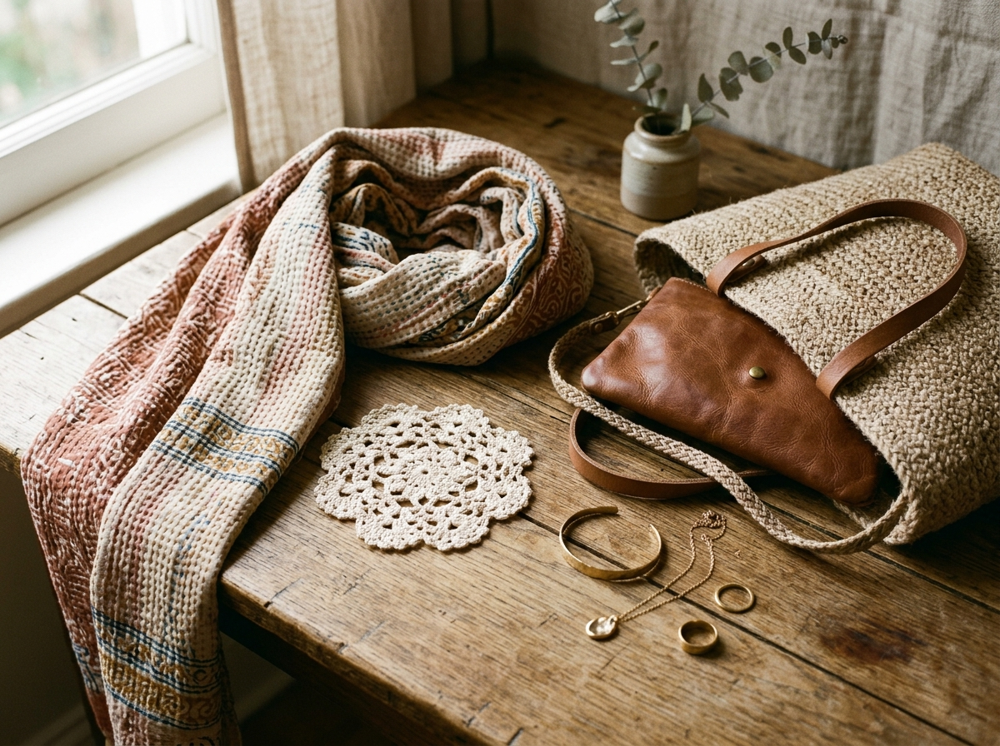
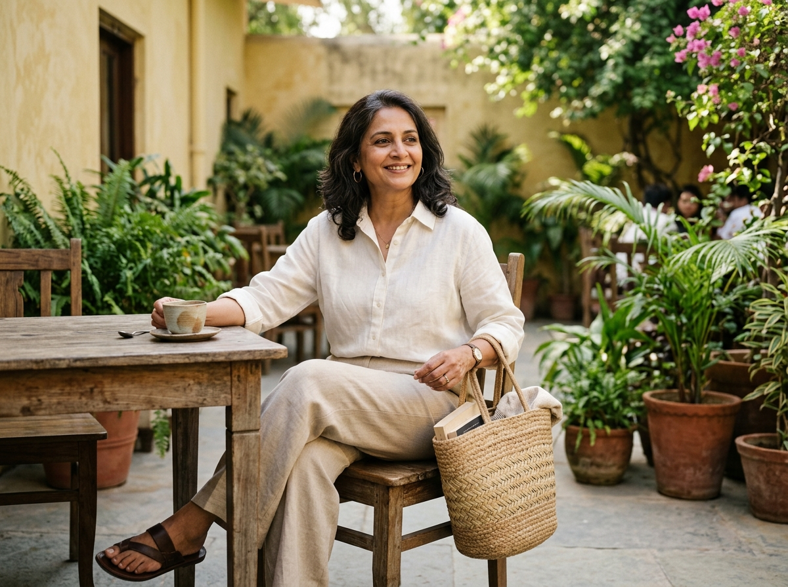

The Capsule Wardrobe: How to Build a Timeless, Practical and Effortless Closet
Fewer clothes. Better choices. More outfits. Less everyday stress.

Have you ever stood in front of a closet packed with clothes and whispered that familiar, exasperated sentence: “I have nothing to wear”?
It is one of modern life's strangest ironies. Your wardrobe is overflowing. Hangers are wedged so tightly together that pulling out a shirt feels like an athletic feat. Drawers are struggling to close, and shelves hold garments you haven't touched in three seasons. Yet when Monday morning arrives, or an unexpected lunch invitation pops up, finding an outfit that feels comfortable, flattering, and effortless feels nearly impossible.
The problem is rarely that you don't have enough clothes. The real challenge is that most wardrobes are collections of individual, impulse purchases rather than garments designed to speak to one another.
This is precisely where a capsule wardrobe comes in—not as a strict fashion rulebook or an exercise in self-denial, but as a practical, supportive system designed to bring calm and clarity back to your mornings.
1. What Is a Capsule Wardrobe?
In simple terms, a capsule wardrobe is a thoughtfully selected collection of versatile, coordinating pieces that easily mix and match clothes to create dozens of complete, everyday outfits.
Over the years, social media has turned the concept into something rigid—insisting you must pare down to exactly 33 items, eliminate all colour, or throw away everything that isn't a plain beige tee. But you don't have to follow arbitrary rules or squeeze your lifestyle into someone else's numeric formula.
A practical capsule wardrobe for women is simply a closet where every garment earns its place by being comfortable, well-fitting, and capable of working with multiple other pieces. When one classic ivory linen shirt can be paired with tailored trousers for work, worn over blue jeans for a Saturday market run, or layered open over a slip dress for dinner, your clothing begins doing the hard work for you.

2. Why Does a Capsule Wardrobe Work?
The beauty of a curated closet isn't just aesthetic; it is deeply psychological. When you reduce visual clutter and eliminate pieces that don't fit your body or life, you immediately ease decision fatigue.
Think of it this way: how much morning energy is wasted trying on four different tops, only to settle on the same sweater you wore on Tuesday because none of the others felt quite right? A functional minimalist wardrobe removes that daily friction.
Here's the interesting part about why building a timeless wardrobe works so effectively in real life:
- Calmer, faster mornings: When every top matches almost every bottom, getting dressed takes two minutes instead of twenty.
- Ending impulse shopping: When you know your style foundation, you stop buying one-off items that languish in your closet with the tags still attached.
- Better cost-per-wear: Investing in quality clothing means your garments wash better, last longer, and retain their shape over years rather than weeks.
- Effortless packing: When your core clothes coordinate naturally, packing for a weekend trip or holiday requires only a carry-on.
- A gentler footprint: Choosing longevity and thoughtful curation is one of the most accessible forms of sustainable fashion.
Don't ask how many clothes you should own.
Ask how many of your clothes you actually wear, love, and feel completely at ease in. Function matters far more than an arbitrary number.
3. Start With Your Real Lifestyle, Not Instagram
The quickest way to build a wardrobe that fails is to copy someone else's aesthetic. A monochromatic, silk-heavy capsule curated by an influencer in Paris won't serve a mother working from home in Bangalore, just as a collection of structured corporate blazers won't help someone whose days revolve around garden walks, freelance writing, and family gatherings.
Before you remove a single hanger from your closet, take an honest look at how you actually spend your week:
Do you work from a home desk three days a week? Are you running errands in warm humidity? Do your weekends involve relaxed lunches, community events, or festive Indian family gatherings where traditional garments, soft kurtas, and handcrafted stoles are your go-to pieces?
A sensible capsule easily incorporates cultural and traditional clothing. A breathable chikankari kurta, a well-cut handloom cotton tunic, or a versatile solid dupatta can function just as brilliantly as any Western button-down. Personal style is not about uniformity—it is about dressing for the life you actually live.
4. Choose Quality and Comfortable Fabrics
Have you ever bought a top that looked exquisite on the hanger, only to feel prickly, sweaty, or constricted within an hour of putting it on? Fabric is the soul of everyday wearability.
When curating classic wardrobe essentials, prioritise textiles that feel kind against the skin. Natural fabrics such as pure linen, organic cotton, breathable cotton-modal blends, and fine lightweight wools offer natural temperature regulation and relaxed, understated drape.

That doesn't mean every synthetic fibre is the enemy. A small percentage of elastane in trousers can provide all-day comfort, and high-performance blends can add durability to outerwear. The trick is to focus on breathability, ease of movement, and how the garment feels against your bare skin during a long afternoon.
5. Build a Simple Capsule Wardrobe Colour Palette
Colour coordination is the secret engine of effortless dressing. When your closet has fifteen competing prints and neon tones that clash, creating harmonious outfits requires constant effort.
Start by selecting three to four core neutral shades that form your base. These are the grounding tones that will make up your coats, trousers, basic tees, and primary knitwear:
- Warm base neutrals: Ivory, oatmeal, warm beige, taupe, soft camel, and rich espresso brown.
- Cool base neutrals: Crisp white, soft grey, charcoal, classic navy, and deep black.
Once your neutrals are established, introduce two or three personal accent colours that bring warmth and joy to your complexion. Muted olive green, earthy rust, dusty blue, terracotta, or soft rose integrate seamlessly with neutrals without overwhelming them.

Consider a simple formula like Ivory + Warm Beige + Olive + Brown. Because every shade in this family shares an earthy undertone, you can reach into your closet in the dark, grab any top and bottom, and know they will look deliberate together.
6. Choose Versatile Wardrobe Essentials
Rather than chasing an unrealistic 50-piece universal checklist, focus on versatile anchors that suit your body shape and daily routine. Here are the building blocks of a timeless wardrobe:
1. Tailored Wide-Leg or Straight Trousers: A high-quality pair in beige, olive, or charcoal that transitions effortlessly from morning meetings to relaxed weekend dinners.
2. The Relaxed Classic Shirt: An ivory or crisp white linen/cotton button-down. Wear it buttoned up, tucked in, half-tucked, or unbuttoned over a vest top.
3. Comfortable High-Rise Denim: One or two pairs of classic blue or ecru jeans with zero artificial distressing. Clean lines ensure timeless longevity.
4. The Everyday Layering Knit: A soft oatmeal cardigan or crewneck sweater in breathable cotton or merino wool that drapes comfortably over shoulders.
5. A Simple Midi Dress or Tunic: A neutral linen slip dress or a minimalist solid kurta that can be styled casually with sandals or dressed up with artisan jewellery.
6. Functional Footwear: Comfortable leather loafers, clean minimal white sneakers, and supportive leather sandals that allow you to walk with confidence.
“You don't need more clothes. You need clothes that work better together.”
7. One Piece, Several Outfits: The Linen Shirt Test
The true strength of versatile clothing reveals itself when a single garment unlocks multiple distinctive looks. Let's look at how one relaxed ivory linen button-down shirt can anchor an entire week of everyday outfits:

Tucked into high-waisted beige trousers with a cognac leather belt and loafers for an effortless work look.
Sleeves rolled up, paired with classic blue denim, canvas sneakers, and a crossbody leather bag for Saturday errands.
Worn completely open as an airy, lightweight overshirt above a neutral ribbed tank dress with leather slide sandals.
Gently front-knotted and paired with a button-front olive linen midi skirt and a woven basket tote.
When your wardrobe is built around pieces that possess this level of adaptability, you stop needing separate wardrobes for different facets of your life. Everything flows naturally.
8. How to Declutter Your Wardrobe Without Guilt
A major misconception is that learning how to build a capsule wardrobe requires hauling giant trash bags to the curb on a Saturday afternoon. That kind of aggressive purging often leads to regret, panic shopping, and unnecessary waste.
The good news is you can declutter your wardrobe gently and mindfully. Start by sorting your clothes into four simple piles:

- 1. Love & Wear Frequently: The reliable heroes that fit your body today, feel sublime, and make you feel confident every single time.
- 2. Useful but Seasonal: Heavy winter knits, rainy-day trench coats, or festive handloom sarees. Store them neatly so they don't clutter your daily rotation.
- 3. The “Maybe” Box: Items you haven't worn in six months but feel uncertain about parting with. Pack them into a storage box. If you don't miss them after a season, letting go becomes easy.
- 4. Time to Pass Along: Pieces that don't fit, don't suit your lifestyle, or feel uncomfortable. Donate them to local charities, sell them on secondhand platforms, or pass them to a friend who will cherish them.
9. Add Personality Through Accessories and Craft
A common fear is that a simplified wardrobe will look sterile or boring. But minimalism is not about erasing character—it is about creating a calm canvas so your personal touches can shine.

A neutral outfit of an ivory top and beige trousers can look entirely different depending on how you adorn it:
Drape a hand-blocked Kantha embroidered scarf over your shoulders, slip on a pair of vintage brass earrings, carry a handwoven jute tote, or wear a delicate handmade crochet accessory. These artisanal details bring heritage, warmth, and texture into everyday style without cluttering your hangers.
10. Don't Confuse Timeless With Boring
There is a vast difference between cultivating timeless fashion and completely ignoring the joy of seasonal trends. Trends are not inherently bad; the trouble starts when we build our entire identity around fleeting micro-fads that expire within eight weeks.
Allow yourself to enjoy trends in moderation. If a fresh shade of marigold or an asymmetrical neckline catches your eye this season, consider adding one thoughtful piece into your rotation. When your foundation is solid, a single seasonal accent feels exciting and fresh rather than overwhelming.
11. The 24-Hour Shopping Rule for Intentional Curation
The easiest way to keep your wardrobe calm is to change how clothes enter your home. Practicing intentional shopping prevents closet bloat before it begins.
The Intentional Shopping Test
When you find something you love, step away for 24 hours and ask yourself these six honest questions:
- Does it fit my body comfortably right now, without requiring tugging, pulling, or restrictive breathing?
- Can I immediately style it with at least three garments already hanging in my closet?
- Does this suit my actual day-to-day life, or am I buying it for an imaginary fantasy routine?
- Would I still love this piece if no one on social media was talking about it?
- Do I already own something very similar that serves the exact same purpose?
- Am I willing to properly care for and wash this fabric over the long term?
If a piece can comfortably answer all six questions, it is no longer an impulse buy—it is a valuable addition to your wardrobe.
12. Final Thoughts: Dressing for Yourself
At its heart, building a capsule wardrobe is not about perfection. It is not about reaching an elusive number of garments or impressing strangers with an impeccably curated rack.

It is about giving yourself the gift of ease. When you open your closet door in the morning and see only pieces that fit you with grace, feel comfortable against your skin, and match without resistance, getting dressed shifts from a stressful chore into a quiet, pleasant moment of self-care.
The best capsule wardrobe is not the smallest one.
It is the one that makes getting dressed easier, shopping more intentional, and everyday style feel genuinely effortless.
Start with what you already own. Look at your favorite clothes with fresh eyes, celebrate the fabrics that make you feel good, and allow your wardrobe to be a calm, supportive part of the life you love living.